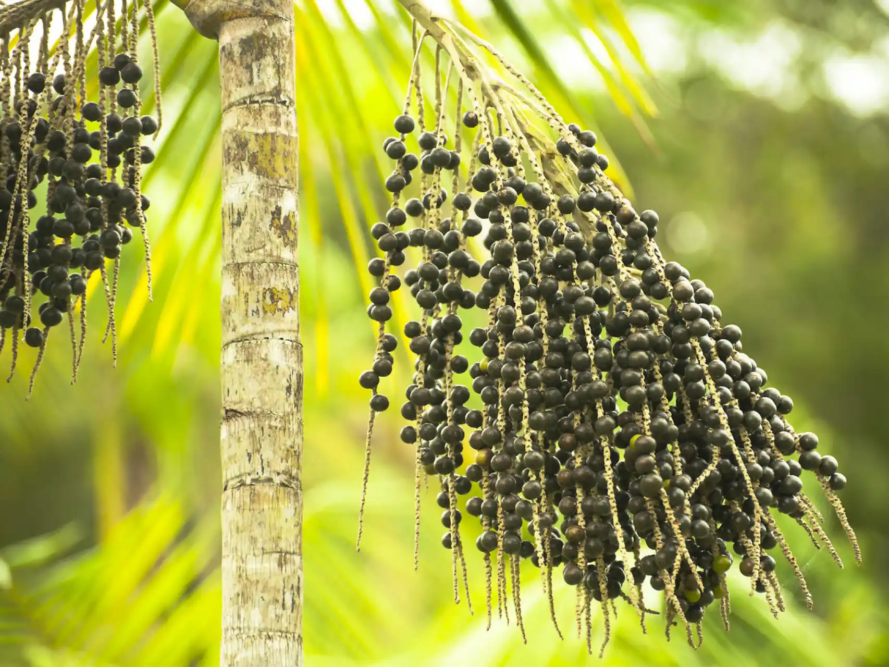
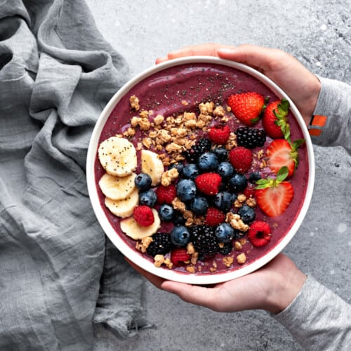
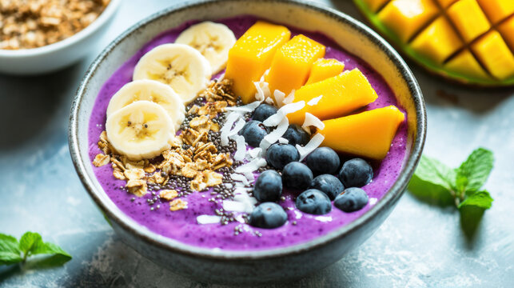

Raíces y Evolución
Conoce el viaje histórico y cultural de este fruto antes de llegar a nuestros tazones.

1. Tradición Indígena
Durante siglos, las tribus amazónicas consumieron açaí como alimento básico salado, acompañando pescado y representando hasta el 40% de su dieta diaria.
2. El Boom en Río
La familia Gracie popularizó la pulpa congelada con guaraná en los 80. Surfistas y atletas lo adoptaron rápidamente como su fuente de energía post-entrenamiento.
3. Fenómeno Global
Hoy, el "Açaí Bowl" es un símbolo mundial de estilo de vida saludable, destacando por su estética vibrante y su alto valor nutricional.
Perfil Nutricional y Datos
Visualizamos la composición que lo convierte en un auténtico "superalimento".
Composición de Macronutrientes
Por 100g de pulpa pura
Poder Antioxidante (ORAC)
Capacidad de Absorción de Radicales de Oxígeno
Prepara el Bowl Perfecto
Elige tu estilo favorito y descubre los secretos para una textura cremosa.

Inspiración Visual
Explora a los referentes que están llevando la estética y el sabor del açaí al siguiente nivel.
Mi pasión por el Açaí
Mi fascinación por este pequeño fruto comenzó casi por casualidad. Lo que empezó como una búsqueda de alternativas más saludables para mis desayunos, rápidamente se convirtió en un viaje de descubrimiento sobre la biodiversidad amazónica.
El açaí es un recordatorio de la conexión intrínseca entre nutrición y naturaleza. He pasado meses experimentando con texturas, buscando la pulpa más pura y entendiendo cómo la temperatura exacta puede transformar una comida simple en una experiencia sensorial increíble.
Mi objetivo es compartir no solo datos técnicos, sino la emoción que siento al saber que cada bowl cuenta una historia.

"Cada bowl es un lienzo de energía natural."
Preguntas frecuentes
Resolvemos tus dudas sobre este superalimento.
¿Qué es el açaí?
El açaí es el fruto de una palmera nativa de la selva amazónica, conocido por su intenso color morado y su alta concentración de antioxidantes.
¿Cuáles son los beneficios del açaí?
Es rico en antocianinas, grasas saludables (Omega 3, 6 y 9), fibra y vitaminas, lo que ayuda a combatir el envejecimiento celular y mejorar la salud cardiovascular.
¿Cómo se consume tradicionalmente?
En la Amazonía se consume tradicionalmente como un alimento salado acompañando pescado o camarones, mientras que globalmente es popular en forma de sorbete dulce o bowls de frutas.
¿El açaí tiene mucho azúcar?
La fruta pura tiene un contenido de azúcar muy bajo. El azúcar suele provenir de los jarabes de guaraná o endulzantes añadidos durante su procesamiento comercial.
¿Cuál es la clave para un buen bowl de açaí?
La clave es la temperatura de la pulpa y usar fruta congelada para obtener una textura cremosa y espesa, similar a un helado, sin necesidad de añadir hielo.